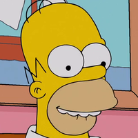
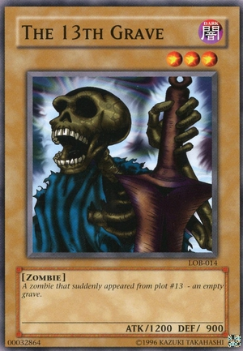
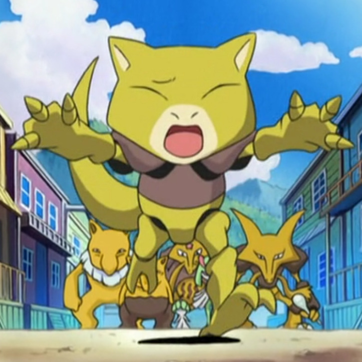
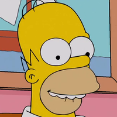
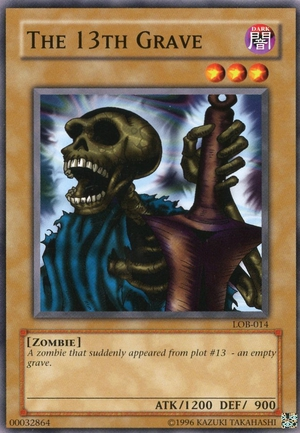
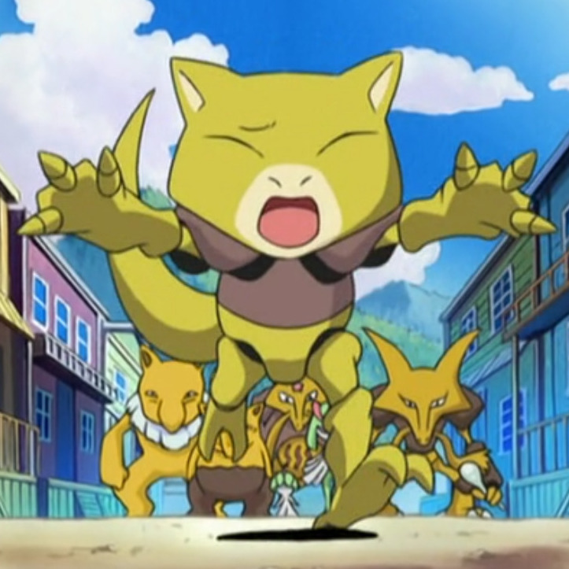

Fake anime character - GAN networks
- Ahmed Hussein - 3
- Bassam Aiman - 17
Problem Statement
Inspired by human face generators; we are using GAN networks to generate new and random anime character faces. The goal of our project is to generate new faces those are visually acceptable and not easily discriminated as being generated using:
- DGAN for random face generation
- CGAN for conditional generation
Dataset
For DGANs
- Anime faces: The dataset consists of ~ 32,000 image, after the previous improvements and training for 12,000 steps these are the results.
- The Simpsons: The dataset consists of Faces extracted from seasons 25-28, after the previous improvements and training for 10,000 steps these are the results.
- Yu-gi cards: The dataset consists of ~ 16,000 image, after the previous improvements and training for 9,000 steps these are the results.
- Fashion-mnist grayscale dataset for testing initial CGAN implementation
- Pokemon dataset: 7000 hand-cropped and labeled Pokemon images for classification
 





Input/Output Examples
- The input to the dataset is the collection of tightly cropped images around the sample and a vector of random numbers
- Additional input for the CGAN is another vector that indicates the class/label (moustache - blue eyes - blonde hair) required to generate the image
- The output is the newly generated fake images which the discriminator couldn't detect they are not real
State of the art
Through using DGAN on the SIMPSONS dataset new fake characters could be generated however many of them were malformed and the resulted images can't be recognized as an acceptable faces
- Note1: The accuracy value is not an indication to the resulted faces, it depends on the discriminator sharpness.
- Note2: The original model is on bedrooms dataset but we want to generate faces.
Through using CGAN on the Fashion MNIST grayscale dataset new clothes are generated in the required class (tshirt - skirt - etc) The following clothes are fake:
Orignial Model from Literature
- DGAN: we are going to use a well-tested model architecture proposed in 2015 that can be seen below. (Link in the references)
- CGAN: we found an implementation for the fashion MNIST dataset and used for testing then implemented a one on the pokemon dataset
Proposed Updates
DGAN-Update #1: Updating the learning rate
The original model needs +15000 steps to get an acceptable result on the anime dataset so we update it (0.00015 → 0.002) which takes +8000 step for an acceptable result.
DGAN-Update #2: Added dropout layers with propability 0.1
To decrease overfitting on the orignal dataset
DGAN-Update #3: Increase discriminator sharpness
The original architecture we used introduced some noise to the ground truth.
- Yreal = 1 - rand()*0.2
- Yfake = rand()*0.2
- Yreal = 1
- Yfake = 0
CGAN-Update #1: Grayscale to RGB
Transitioning from Grayscale to RGB was not easy; as the RGB images contained more parameters and different model alterations to accept the new channels.
CGAN-Update #2: Latent space
One other hyperparameter was the latent space. We tried different combinations of 100/150/200 points but it didn’t provide any significant differences other than the increase in model size.
Results
For the DGAN:
For the CGAN on the pokemon dataset:
Technical report
Note: The data needed is very large (+20,000 images) so we can't load the data and go with epochs, instead we sample batches (128 image) and feed forward the network, train the discriminator then let the generator generate new image with a random initialized vector then the discriminator give a +ve score to the generator if it is found to be real, else it is given a -ve score, this is a one step
- We used google colab for the training
- The implementation and the models are in Keras
- Time DGAN: The training for the 10000 steps on google colab using GPU takes around 1.5 hours
- Time CGAN: 8 hours of interrupted training/li>
- Number of steps fro DGAN: 10,000 steps on average
- Number of steps fro CGAN: Each 100 epoch takes approximately 1 hour
Conclusion
The DGAN have good and acceptable results that differs according to:
- The model chosen
- The dataset must be large enough (GANs are data hungry) otherwise a blurry image would appear
- The model can't be very complex because each new layer added increases the data needed exponentially
- The dataset shouldn't have many colors in the background and must have a well defined outline for the generator to capture it easily
- Transitioning from Grayscale to RGB. RGB images might require a more sophisticated architecture
- Image pre-processing: CGAN might require different image pre-processing.
- Model size: constrained by Google Colab’s resources, we had to make the compromise between the image/model size and the memory allocation/training time. Our model had more than 5 million parameters for just a 64*64 image.
- The dataset: We think this is the greatest reason behind the results. The dataset contained 150 classes with about 60 images per class. The images were of no fixed context and of uncontrolled settings. From our previous experience with GANs, they are data hungry models that require huge amounts of data. But again, we were constrained by Colab’s resources and the training time.
References
List all references here, the following are only examples